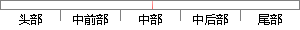

若离散语音信号相邻的采样存在不同的代数符号，将此现象成为发生了过零，因此可以计算过零的次数。
片段位置图

相似结果|
相似片段 1：。(2) 短时平均过零率[15]在离散时间语音信号情况下，如果相邻的采样具有不同的代数符号就称为发生了过零，因此可以计算过零的次数。单位时间内过零的次数就称为过零率。一段长时间内的过零率称作平均过零率
相似片段 2：语音的时域波形通过横轴的情况；在离散时间信号情况下，如果相邻的采样具有不同的代数符号，就称为发生了过零，因此可以计算过零的次数[17]。在一定程度上，短时平均过零率可以表现出语音信号的频率信息，由此
相似片段 3：。在离散时阳J语音信号情况下．如果相邻的采样具有不同的代数符号就称为发生了过零。由此可以计算得到过零的次数。单位时问内的过零次数称为过零率。一段长时fBJ内的过零率称作平均过零率。对于窄带信号，平均过零
相似片段 4：时间轴的情况来考察短时过零率。而对于离散的语音信号，可以通过判断相邻采样点具有不同的符号来判断其发生了过零，可由此计算过零次数。单位时间内过零的次数就称为过零率。对于正弦信号而言，平均过零率即为正弦信号
相似片段 5：是离散的语音信号下，假设相邻两个采样点具有不同的代数符号就认为发生过一次横穿横轴，即发生了过零，从而可以计算语音信号过零的次数。单位时间内过零的次数就叫过零率。一段时间内的过零率叫平均过零率。对于余弦
相似片段 6：以时间轴为横轴，则短时平均过零率指语音信号在一帧内穿过横轴的频率。在经过采用量化的语音信号构成时间上离散的序列，如果相邻的采样具有不同的代数符合就称发生了过零，因此可以计算过零率。语音信号近似的认为
相似片段 7：对于连续语音信号，可以通过观察语音时域波形通过时间轴的情况计算过零率，对于离散语音信号，可以通过计算相邻采样值之间不同代数符号出现的次数得到。设语音信号的短时平均过零率为nZ ，则可用式(3-1
相似片段 8：率短时平均过零率指的是语音信号里每一帧内包含的信号通过零值的次数。对于有时间横轴的连续语音信号，能够看到语音信号的时域波形通过横轴的波形图。在离散时间语音信号的情况下，假如相邻的采样有不一样的代数符号，就可以判别为发生了过零，能够计算过零的次数。
相似片段 9：，如果相邻的采样具有不同的代数符号就称为发生了过零，因此可以计算过零的次数。如果是正弦信号，其平均过零率就是信号频率的二倍除以采样频率，而采样频率是固定的。因此过零率在一定程度上可以反映信号的频率信息
相似片段 10：(2)过零率分析过零分析是语音的时域分析中最简单的一种分析。有时间横轴的连续语音信号，可以观察到语音的时域波形通过横轴的情况。在离散时间语音信号情况下，如果相邻的采样具有不同的代数符号就称为发生了过
|
※ 片段修改建议 ※
近似词参考：- 离散：分离
- 信号：旌旗灯号
- 不同：分歧 差别
- 符号：标记
- 现象：征象
- 发生：产生
- 因此：是以 因而
- 计算：计较 较量争论 盘算
系统自动生成语句：若分离语音旌旗灯号相邻的采样存在分歧的代数标记，将此征象成为产生了过零，是以可以计较过零的次数。
注：本片段修改建议为系统自动生成，仅供参考。